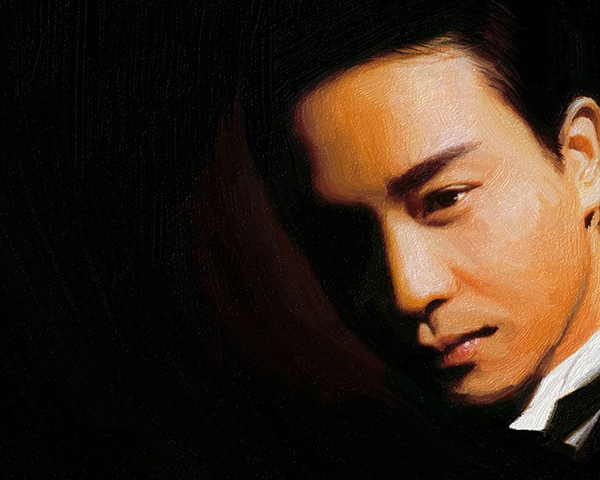
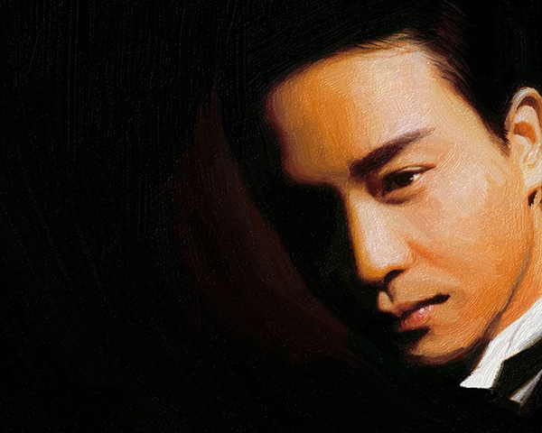
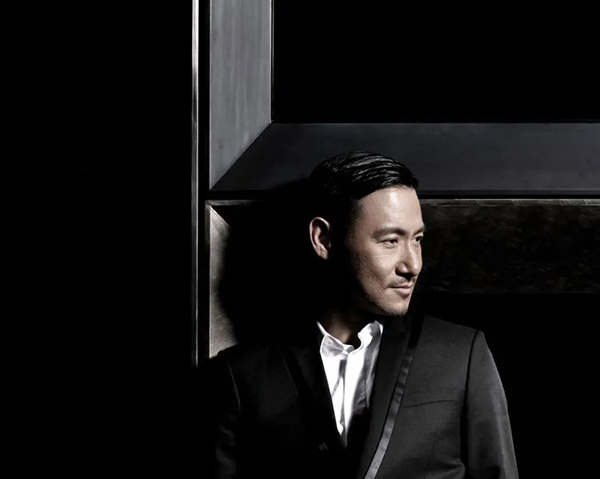
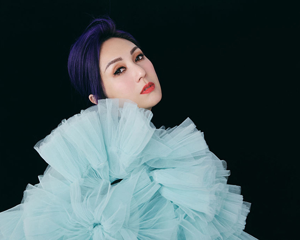
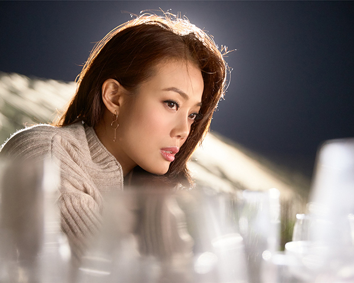
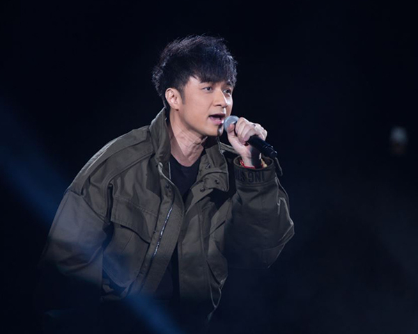
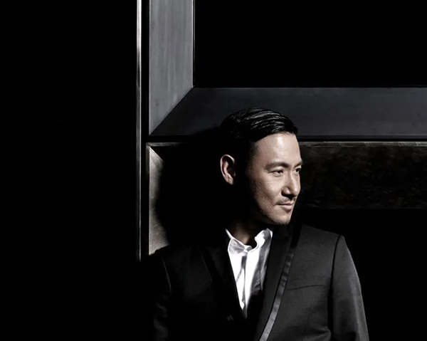
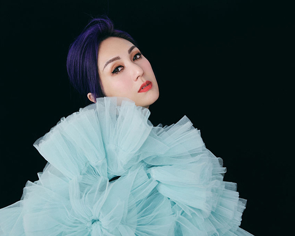
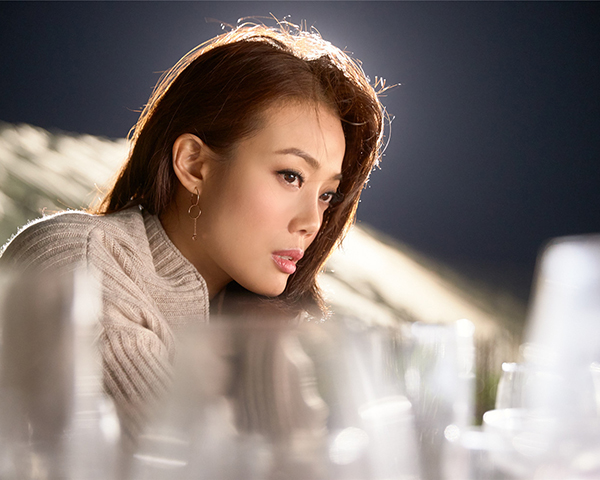
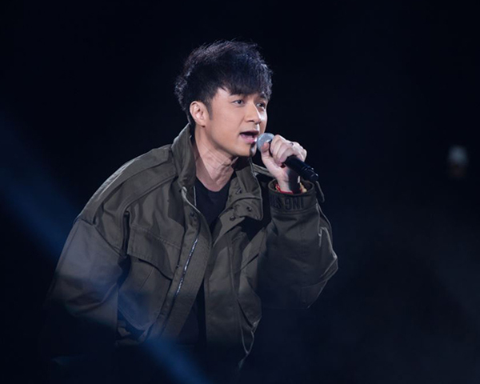

 








Singers' Introduction
Eason Chan
Eason Chan Yik-shun (Chinese: 陳奕迅) is a Hong Kong singer and actor. Eason Chan has been praised by Time magazine as a front runner in the next generation of Cantopop. He was third Hong Kong singer to be called the "god of songs" after Samuel Hui and Jacky Cheung. In 2012, Time Out Hong Kong crowned Chan as the "King of Asian Pop".
Leslie Cheung
Born Cheung Fat-chung in Kowloon, Cheung studied in England from the age of 12 until returning to Hong Kong in 1976 to pursue a career in show business. He achieved wide popularity with his 1984 self-titled album and its single "Monica", whose upbeat dance production introduced a new popular trend to Cantopop in addition to the contemporary pool of sentimental ballads. Cheung's continued success with a string of hit albums in the mid- and late-1980s, most notably 1987 best-seller Summer Romance, won him numerous awards, including Most Popular Male Artist at the 1988 and 1989 Jade Solid Gold Best Ten Music Awards. In addition to music, Cheung had breakthrough film roles as a disillusioned teenager in Nomad (1982) and as a police officer torn between justice and brotherhood in A Better Tomorrow (1986). He announced his "retirement" from music and emigrated to Canada in 1989, but remained active in his burgeoning acting career.
Anita Mui
Anita Mui Yim-fong (Chinese: 梅艷芳; 10 October 1963 – 30 December 2003) was a Hong Kong singer and actress who made major contributions to the Cantopop music scene and received numerous awards and honours. She remained an idol throughout her career, and is regarded as a Cantopop diva. She was dubbed as the "daughter of Hong Kong" and is considered one of the most iconic Cantopop singers.
Mui once held a sold-out concert in Hammersmith, London, England, where she was dubbed the "Madonna of the East", which brought her to further international fame. That title stayed with her throughout her career, in both Eastern and Western media.
Jacky Cheung
Jacky Cheung Hok-yau (born 10 July 1961) is a Hong Kong singer, songwriter and actor. Dubbed the “God of Songs”,he is considered by the media as one of the “Four Heavenly Kings” of Hong Kong pop music. Cheung is known for his technically skilled vocals, lengthy tours, multimillion-selling album The Goodbye Kiss and his personal Private Corner album project, for which he coined the phrase 'Canto-jazz . His successful music and acting career has made Cheung one of Hong Kong's icons. He was elected by Time Magazine as one of the “25 most influential people in the New Hong Kong”
Mariam Yeung
Yeung joined the entertainment industry after coming third in a singing competition in 1995 and now has more than 35 albums to her name.
She is also a successful actress, winning a best actress award for her role in Love in the Buff in 2013.
Joey Yung
Joey Yung (Chinese: 容祖兒; pinyin: Róng zǔer; Jyutping: Jung4 Zou2 Ji4; born 16 June 1980) is a Hong Kong singer and Cantopop diva signed to Emperor Entertainment Group.
Since her debut in 1996, Yung has won numerous awards, including the prestigious JSG Most Popular Female Singer and Ultimate Best Female Singer – Gold awards a record-breaking nine times. She was ranked 63rd on the 2014 Forbes China Celebrity 100, making her the most influential Hong Kong-based female singer that year. In 2014, she reportedly earned HK$80 million (US$10.3 million).
Leo Koo
Leo Ku Kui-kei is a Hong Kong Cantopop and Mandopop singer, actor, TV host, model, cartoonist, MV director, and producer and designer. He employs falsetto as a singing technique and was named as one of the "Five Fresh Tigers of TVB".
Hins Cheung
Cheung King Hin (Chinese: 張敬軒; born 1 February 1981) mostly known professionally as Hins Cheung, is a Chinese-born Hong Kong singer, songwriter, record producer, and businessperson. He made his debut in 2001 with the studio album Hins' First. He has since released 17 studio albums and EPs. Among his various accolades, he has won the Ultimate Song Chart Awards Best Male Singer Gold prize six times, Jade Solid Gold Most Popular Male Singer four times, and Best Pop Male Singer at the Top Ten Chinese Gold Songs Awards. In 2021, he was shortlisted for Asia's Most Influential by Tatler Asia.